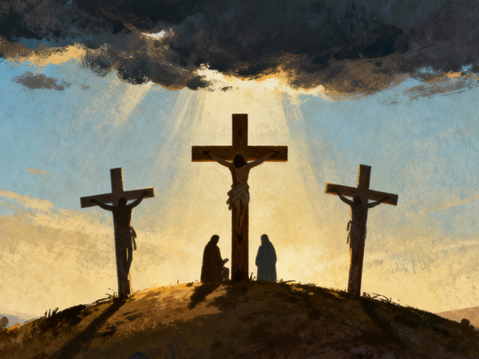

Salvation
Bible verses on Salvation

Genesis 49:18
I have waited for your salvation, O LORD!
Exodus 14:13
And Moses said to the people, “Do not be afraid. Stand still, and see the salvation of the LORD, which He will accomplish for you today. For the Egyptians whom you see today, you shall see again no more forever.
Exodus 15:2
The LORD is my strength and song,
And He has become my salvation;
He is my God, and I will praise Him;
My father's God, and I will exalt Him.
Deuteronomy 32:15
“But Jeshurun grew fat and kicked;
You grew fat, you grew thick,
You are obese!
Then he forsook God who made him,
And scornfully esteemed the Rock of his salvation
1 Samuel 2:1
And Hannah prayed and said:
“My heart rejoices in the LORD;
My horn is exalted in the LORD.
I smile at my enemies,
Because I rejoice in Your salvation
1 Samuel 11:13
But Saul said, “Not a man shall be put to death this day, for today the LORD has accomplished salvation in Israel.”
2 Samuel 22:3
The God of my strength, in whom I will trust;
My shield and the horn of my salvation,
My stronghold and my refuge;
My Savior, You save me from violence.
2 Samuel 22:36
“You have also given me the shield of Your salvation;
Your gentleness has made me great.
2 Samuel 22:47
“The LORD lives!
Blessed be my Rock!
Let God be exalted,
The Rock of my salvation
2 Samuel 22:51
“He is the tower of salvation to His king,
And shows mercy to His anointed,
To David and his descendants forevermore.”
2 Samuel 23:5
“Although my house is not so with God,
Yet He has made with me an everlasting covenant,
Ordered in all things and secure.
For this is all my salvation and all my desire;
Will He not make it increase?
1 Chronicles 16:23
Sing to the LORD, all the earth;
Proclaim the good news of His salvation from day to day.
1 Chronicles 16:35
And say, “Save us, O God of our salvation;
Gather us together, and deliver us from the Gentiles,
To give thanks to Your holy name,
To triumph in Your praise.”
2 Chronicles 6:41
“Now therefore,
Arise, O LORD God, to Your resting place,
You and the ark of Your strength.
Let Your priests, O LORD God, be clothed with salvation,
And let Your saints rejoice in goodness.
2 Chronicles 20:17
‘You will not need to fight in this battle. Position yourselves, stand still and see the salvation of the LORD, who is with you, O Judah and Jerusalem!' Do not fear or be dismayed; tomorrow go out against them, for the LORD is with you.”
Job 13:16
He also shall be my salvation,
For a hypocrite could not come before Him.
Psalms 3:8
Salvation belongs to the LORD.
Your blessing is upon Your people. Selah
Psalms 9:14
That I may tell of all Your praise
In the gates of the daughter of Zion.
I will rejoice in Your salvation
Psalms 13:5
But I have trusted in Your mercy;
My heart shall rejoice in Your salvation
Psalms 14:7
Oh, that the salvation of Israel would come out of Zion!
When the LORD brings back the captivity of His people,
Let Jacob rejoice and Israel be glad.
Psalms 18:2
The LORD is my rock and my fortress and my deliverer;
My God, my strength, in whom I will trust;
My shield and the horn of my salvation, my stronghold.
Psalms 18:35
You have also given me the shield of Your salvation;
Your right hand has held me up,
Your gentleness has made me great.
Psalms 18:46
The LORD lives!
Blessed be my Rock!
Let the God of my salvation be exalted.
Psalms 20:5
We will rejoice in your salvation,
And in the name of our God we will set up our banners!
May the LORD fulfill all your petitions.
Psalms 21:1
To the Chief Musician. A Psalm of David.
The king shall have joy in Your strength, O LORD;
And in Your salvation how greatly shall he rejoice!
Psalms 21:5
His glory is great in Your salvation;
Honor and majesty You have placed upon him.
Psalms 24:5
He shall receive blessing from the LORD,
And righteousness from the God of his salvation
Psalms 25:5
Lead me in Your truth and teach me,
For You are the God of my salvation;
On You I wait all the day.
Psalms 27:1
A Psalm of David.
The LORD is my light and my salvation;
Whom shall I fear?
The LORD is the strength of my life;
Of whom shall I be afraid?
Psalms 27:9
Do not hide Your face from me;
Do not turn Your servant away in anger;
You have been my help;
Do not leave me nor forsake me,
O God of my salvation
Psalms 35:3
Also draw out the spear,
And stop those who pursue me.
Say to my soul,
“I am your salvation.”
Psalms 35:9
And my soul shall be joyful in the LORD;
It shall rejoice in His salvation
Psalms 37:39
But the salvation of the righteous is from the LORD;
He is their strength in the time of trouble.
Psalms 38:22
Make haste to help me,
O Lord, my salvation
Psalms 40:10
I have not hidden Your righteousness within my heart;
I have declared Your faithfulness and Your salvation;
I have not concealed Your lovingkindness and Your truth
From the great assembly.
Psalms 40:16
Let all those who seek You rejoice and be glad in You;
Let such as love Your salvation say continually,
“The LORD be magnified!”
Psalms 50:23
Whoever offers praise glorifies Me;
And to him who orders his conduct aright
I will show the salvation of God.”
Psalms 51:12
Restore to me the joy of Your salvation,
And uphold me by Your generous Spirit.
Psalms 51:14
Deliver me from the guilt of bloodshed, O God,
The God of my salvation,
And my tongue shall sing aloud of Your righteousness.
Psalms 53:6
Oh, that the salvation of Israel would come out of Zion!
When God brings back the captivity of His people,
Let Jacob rejoice and Israel be glad.
Psalms 62:1
To the Chief Musician. To Jeduthun. A Psalm of David.
Truly my soul silently waits for God;
From Him comes my salvation
Psalms 62:2
He only is my rock and my salvation;
He is my defense;
I shall not be greatly moved.
Psalms 62:6
He only is my rock and my salvation;
He is my defense;
I shall not be moved.
Psalms 62:7
In God is my salvation and my glory;
The rock of my strength,
And my refuge, is in God.
Psalms 65:5
By awesome deeds in righteousness You will answer us,
O God of our salvation,
You who are the confidence of all the ends of the earth,
And of the far-off seas;
Psalms 67:2
That Your way may be known on earth,
Your salvation among all nations.
Psalms 68:19
Blessed be the Lord,
Who daily loads us with benefits,
The God of our salvation! Selah
Psalms 68:20
Our God is the God of salvation;
And to GOD the Lord belong escapes from death.
Psalms 69:13
But as for me, my prayer is to You,
O LORD, in the acceptable time;
O God, in the multitude of Your mercy,
Hear me in the truth of Your salvation
Psalms 69:29
But I am poor and sorrowful;
Let Your salvation, O God, set me up on high.
Psalms 70:4
Let all those who seek You rejoice and be glad in You;
And let those who love Your salvation say continually,
“Let God be magnified!”
Psalms 71:15
My mouth shall tell of Your righteousness
And Your salvation all the day,
For I do not know their limits.
Psalms 74:12
For God is my King from of old,
Working salvation in the midst of the earth.
Psalms 78:22
Because they did not believe in God,
And did not trust in His salvation
Psalms 79:9
Help us, O God of our salvation,
For the glory of Your name;
And deliver us, and provide atonement for our sins,
For Your name's sake!
Psalms 85:4
Restore us, O God of our salvation,
And cause Your anger toward us to cease.
Psalms 85:7
Show us Your mercy, LORD,
And grant us Your salvation
Psalms 85:9
Surely His salvation is near to those who fear Him,
That glory may dwell in our land.
Psalms 88:1
A Song. A Psalm of the sons of Korah. To the Chief Musician. Set to “Mahalath Leannoth.” A Contemplation of Heman the Ezrahite.
O LORD, God of my salvation,
I have cried out day and night before You.
Psalms 89:26
He shall cry to Me, ‘You are my Father,
My God, and the rock of my salvation
Psalms 91:16
With long life I will satisfy him,
And show him My salvation.”
Psalms 95:1
Oh come, let us sing to the LORD!
Let us shout joyfully to the Rock of our salvation
Psalms 96:2
Sing to the LORD, bless His name;
Proclaim the good news of His salvation from day to day.
Psalms 98:2
The LORD has made known His salvation;
His righteousness He has revealed in the sight of the nations.
Psalms 98:3
He has remembered His mercy and His faithfulness to the house of Israel;
All the ends of the earth have seen the salvation of our God.
Psalms 106:4
Remember me, O LORD, with the favor You have toward Your people.
Oh, visit me with Your salvation
Psalms 116:13
I will take up the cup of salvation,
And call upon the name of the LORD.
Psalms 118:14
The LORD is my strength and song,
And He has become my salvation.
Psalms 118:15
The voice of rejoicing and salvation
Is in the tents of the righteous;
The right hand of the LORD does valiantly.
Psalms 118:21
I will praise You,
For You have answered me,
And have become my salvation
Psalms 119:41
WAW
Let Your mercies come also to me, O LORD—
Your salvation according to Your word.
Psalms 119:81
KAPH
My soul faints for Your salvation,
But I hope in Your word.
Psalms 119:123
My eyes fail from seeking Your salvation
And Your righteous word.
Psalms 119:155
Salvation is far from the wicked,
For they do not seek Your statutes.
Psalms 119:166
LORD, I hope for Your salvation,
And I do Your commandments.
Psalms 119:174
I long for Your salvation, O LORD,
And Your law is my delight.
Psalms 132:16
I will also clothe her priests with salvation,
And her saints shall shout aloud for joy.
Psalms 140:7
O GOD the Lord, the strength of my salvation,
You have covered my head in the day of battle.
Psalms 144:10
The One who gives salvation to kings,
Who delivers David His servant
From the deadly sword.
Psalms 149:4
For the LORD takes pleasure in His people;
He will beautify the humble with salvation
Isaiah 12:2
Behold, God is my salvation,
I will trust and not be afraid;
‘For YAH, the LORD, is my strength and song;
He also has become my salvation.' ”
Isaiah 12:3
Therefore with joy you will draw water
From the wells of salvation
Isaiah 17:10
Because you have forgotten the God of your salvation,
And have not been mindful of the Rock of your stronghold,
Therefore you will plant pleasant plants
And set out foreign seedlings;
Isaiah 25:9
And it will be said in that day:
“Behold, this is our God;
We have waited for Him, and He will save us.
This is the LORD;
We have waited for Him;
We will be glad and rejoice in His salvation.”
Isaiah 26:1
In that day this song will be sung in the land of Judah:
“We have a strong city;
God will appoint salvation for walls and bulwarks.
Isaiah 33:2
O LORD, be gracious to us;
We have waited for You.
Be their arm every morning,
Our salvation also in the time of trouble.
Isaiah 33:6
Wisdom and knowledge will be the stability of your times,
And the strength of salvation;
The fear of the LORD is His treasure.
Isaiah 45:8
“Rain down, you heavens, from above,
And let the skies pour down righteousness;
Let the earth open, let them bring forth salvation,
And let righteousness spring up together.
I, the LORD, have created it.
Isaiah 45:17
But Israel shall be saved by the LORD
With an everlasting salvation;
You shall not be ashamed or disgraced
Forever and ever.
Isaiah 46:13
I bring My righteousness near, it shall not be far off;
My salvation shall not linger.
And I will place salvation in Zion,
For Israel My glory.
Isaiah 49:6
Indeed He says,
‘It is too small a thing that You should be My Servant
To raise up the tribes of Jacob,
And to restore the preserved ones of Israel;
I will also give You as a light to the Gentiles,
That You should be My salvation to the ends of the earth.' ”
Isaiah 49:8
Thus says the LORD:
“In an acceptable time I have heard You,
And in the day of salvation I have helped You;
I will preserve You and give You
As a covenant to the people,
To restore the earth,
To cause them to inherit the desolate heritages;
Isaiah 51:5
My righteousness is near,
My salvation has gone forth,
And My arms will judge the peoples;
The coastlands will wait upon Me,
And on My arm they will trust.
Isaiah 51:6
Lift up your eyes to the heavens,
And look on the earth beneath.
For the heavens will vanish away like smoke,
The earth will grow old like a garment,
And those who dwell in it will die in like manner;
But My salvation will be forever,
And My righteousness will not be abolished.
Isaiah 51:8
For the moth will eat them up like a garment,
And the worm will eat them like wool;
But My righteousness will be forever,
And My salvation from generation to generation.”
Isaiah 52:7
How beautiful upon the mountains
Are the feet of him who brings good news,
Who proclaims peace,
Who brings glad tidings of good things,
Who proclaims salvation,
Who says to Zion,
“Your God reigns!”
Isaiah 52:10
The LORD has made bare His holy arm
In the eyes of all the nations;
And all the ends of the earth shall see
The salvation of our God.
Isaiah 56:1
Thus says the LORD:
“Keep justice, and do righteousness,
For My salvation is about to come,
And My righteousness to be revealed.
Isaiah 59:11
We all growl like bears,
And moan sadly like doves;
We look for justice, but there is none;
For salvation, but it is far from us.
Isaiah 59:16
He saw that there was no man,
And wondered that there was no intercessor;
Therefore His own arm brought salvation for Him;
And His own righteousness, it sustained Him.
Isaiah 59:17
For He put on righteousness as a breastplate,
And a helmet of salvation on His head;
He put on the garments of vengeance for clothing,
And was clad with zeal as a cloak.
Isaiah 60:18
Violence shall no longer be heard in your land,
Neither wasting nor destruction within your borders;
But you shall call your walls Salvation,
And your gates Praise.
Isaiah 61:10
I will greatly rejoice in the LORD,
My soul shall be joyful in my God;
For He has clothed me with the garments of salvation,
He has covered me with the robe of righteousness,
As a bridegroom decks himself with ornaments,
And as a bride adorns herself with her jewels.
Isaiah 62:1
For Zion's sake I will not hold My peace,
And for Jerusalem's sake I will not rest,
Until her righteousness goes forth as brightness,
And her salvation as a lamp that burns.
Isaiah 62:11
Indeed the LORD has proclaimed
To the end of the world:
“Say to the daughter of Zion,
‘Surely your salvation is coming;
Behold, His reward is with Him,
And His work before Him.' ”
Isaiah 63:5
I looked, but there was no one to help,
And I wondered
That there was no one to uphold;
Therefore My own arm brought salvation for Me;
And My own fury, it sustained Me.
Jeremiah 3:23
Truly, in vain is salvation hoped for from the hills,
And from the multitude of mountains;
Truly, in the LORD our God
Is the salvation of Israel.
Lamentations 3:26
It is good that one should hope and wait quietly
For the salvation of the LORD.
Jonah 2:9
But I will sacrifice to You
With the voice of thanksgiving;
I will pay what I have vowed.
Salvation is of the LORD.”
Micah 7:7
Therefore I will look to the LORD;
I will wait for the God of my salvation;
My God will hear me.
Habakkuk 3:8
O LORD, were You displeased with the rivers,
Was Your anger against the rivers,
Was Your wrath against the sea,
That You rode on Your horses,
Your chariots of salvation
Habakkuk 3:13
You went forth for the salvation of Your people,
For salvation with Your Anointed.
You struck the head from the house of the wicked,
By laying bare from foundation to neck. Selah
Habakkuk 3:18
Yet I will rejoice in the LORD,
I will joy in the God of my salvation
Zechariah 9:9
“Rejoice greatly, O daughter of Zion!
Shout, O daughter of Jerusalem!
Behold, your King is coming to you;
He is just and having salvation,
Lowly and riding on a donkey,
A colt, the foal of a donkey.
Luke 1:69
And has raised up a horn of salvation for us
In the house of His servant David,
Luke 1:77
To give knowledge of salvation to His people
By the remission of their sins,
Luke 2:30
For my eyes have seen Your salvation
Luke 3:6
And all flesh shall see the salvation of God.' ”
Luke 19:9
And Jesus said to him, “Today salvation has come to this house, because he also is a son of Abraham;
John 4:22
“You worship what you do not know; we know what we worship, for salvation is of the Jews.
Acts 4:12
“Nor is there salvation in any other, for there is no other name under heaven given among men by which we must be saved.”
Acts 13:26
“Men and brethren, sons of the family of Abraham, and those among you who fear God, to you the word of this salvation has been sent.
Acts 13:47
“For so the Lord has commanded us:
‘I have set you as a light to the Gentiles,
That you should be for salvation to the ends of the earth.' ”
Acts 16:17
This girl followed Paul and us, and cried out, saying, “These men are the servants of the Most High God, who proclaim to us the way of salvation.”
Acts 28:28
“Therefore let it be known to you that the salvation of God has been sent to the Gentiles, and they will hear it!”
Romans 1:16
For I am not ashamed of the gospel of Christ, for it is the power of God to salvation for everyone who believes, for the Jew first and also for the Greek.
Romans 10:10
For with the heart one believes unto righteousness, and with the mouth confession is made unto salvation
Romans 11:11
I say then, have they stumbled that they should fall? Certainly not! But through their fall, to provoke them to jealousy, salvation has come to the Gentiles.
Romans 13:11
And do this, knowing the time, that now it is high time to awake out of sleep; for now our salvation is nearer than when we first believed.
2 Corinthians 1:6
Now if we are afflicted, it is for your consolation and salvation, which is effective for enduring the same sufferings which we also suffer. Or if we are comforted, it is for your consolation and salvation
2 Corinthians 6:2
For He says:
“In an acceptable time I have heard you,
And in the day of salvation I have helped you.”
Behold, now is the accepted time; behold, now is the day of salvation
2 Corinthians 7:10
For godly sorrow produces repentance leading to salvation, not to be regretted; but the sorrow of the world produces death.
Ephesians 1:13
In Him you also trusted, after you heard the word of truth, the gospel of your salvation; in whom also, having believed, you were sealed with the Holy Spirit of promise,
Ephesians 6:17
And take the helmet of salvation, and the sword of the Spirit, which is the word of God;
Philippians 1:28
and not in any way terrified by your adversaries, which is to them a proof of perdition, but to you of salvation, and that from God.
Philippians 2:12
Therefore, my beloved, as you have always obeyed, not as in my presence only, but now much more in my absence, work out your own salvation with fear and trembling;
1 Thessalonians 5:8
But let us who are of the day be sober, putting on the breastplate of faith and love, and as a helmet the hope of salvation
1 Thessalonians 5:9
For God did not appoint us to wrath, but to obtain salvation through our Lord Jesus Christ,
2 Thessalonians 2:13
But we are bound to give thanks to God always for you, brethren beloved by the Lord, because God from the beginning chose you for salvation through sanctification by the Spirit and belief in the truth,
2 Timothy 2:10
Therefore I endure all things for the sake of the elect, that they also may obtain the salvation which is in Christ Jesus with eternal glory.
2 Timothy 3:15
and that from childhood you have known the Holy Scriptures, which are able to make you wise for salvation through faith which is in Christ Jesus.
Titus 2:11
For the grace of God that brings salvation has appeared to all men,
Hebrews 1:14
Are they not all ministering spirits sent forth to minister for those who will inherit salvation
Hebrews 2:3
how shall we escape if we neglect so great a salvation, which at the first began to be spoken by the Lord, and was confirmed to us by those who heard Him,
Hebrews 2:10
For it was fitting for Him, for whom are all things and by whom are all things, in bringing many sons to glory, to make the captain of their salvation perfect through sufferings.
Hebrews 5:9
And having been perfected, He became the author of eternal salvation to all who obey Him,
Hebrews 6:9
But, beloved, we are confident of better things concerning you, yes, things that accompany salvation, though we speak in this manner.
Hebrews 9:28
so Christ was offered once to bear the sins of many. To those who eagerly wait for Him He will appear a second time, apart from sin, for salvation
1 Peter 1:5
who are kept by the power of God through faith for salvation ready to be revealed in the last time.
1 Peter 1:9
receiving the end of your faith—the salvation of your souls.
1 Peter 1:10
Of this salvation the prophets have inquired and searched carefully, who prophesied of the grace that would come to you,
2 Peter 3:15
and consider that the longsuffering of our Lord is salvation—as also our beloved brother Paul, according to the wisdom given to him, has written to you,
Jde 1:3
Beloved, while I was very diligent to write to you concerning our common salvation, I found it necessary to write to you exhorting you to contend earnestly for the faith which was once for all delivered to the saints.
Revelation 7:10
and crying out with a loud voice, saying, “Salvation belongs to our God who sits on the throne, and to the Lamb!”
Revelation 12:10
Then I heard a loud voice saying in heaven, “Now salvation, and strength, and the kingdom of our God, and the power of His Christ have come, for the accuser of our brethren, who accused them before our God day and night, has been cast down.
Revelation 19:1
After these things I heard a loud voice of a great multitude in heaven, saying, “Alleluia! Salvation and glory and honor and power belong to the Lord our God!